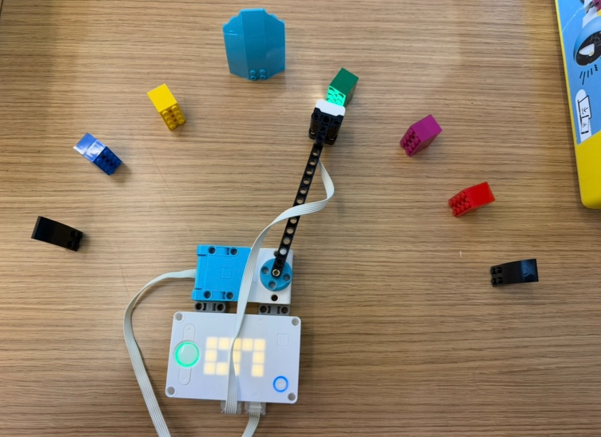

This project uses a LEGO SPIKE Prime robot to search a one-dimensional track for a green LEGO brick while avoiding black boundary bricks. The robot uses Q-learning and a Q-table to learn which actions to take in each state through repeated training episodes and rewards.
The setup uses a motor on Port B to move the search mechanism and a Color Sensor on Port D to identify colored positions. A diagnostic script, read_color.py, is used to calibrate readings and distinguish green target, black boundary, and neutral states.
The Q-table stores the expected value of available actions for each state. The robot receives a positive reward for reaching the green goal and a negative penalty for encountering a black boundary. Across training episodes, it uses these rewards to improve its navigation policy.
The MicroPython program, rl_color_search.py, runs on the SPIKE Prime hub. An external web dashboard visualizes learning curves, state-action values, and policy convergence during training.